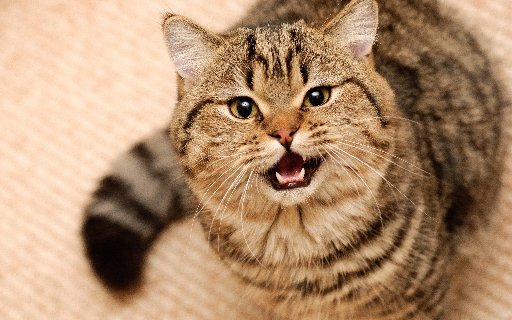
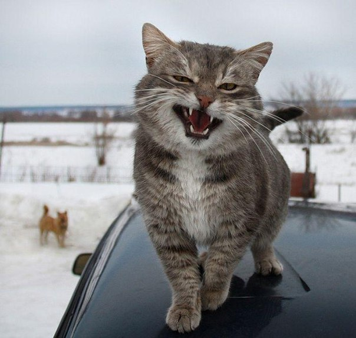
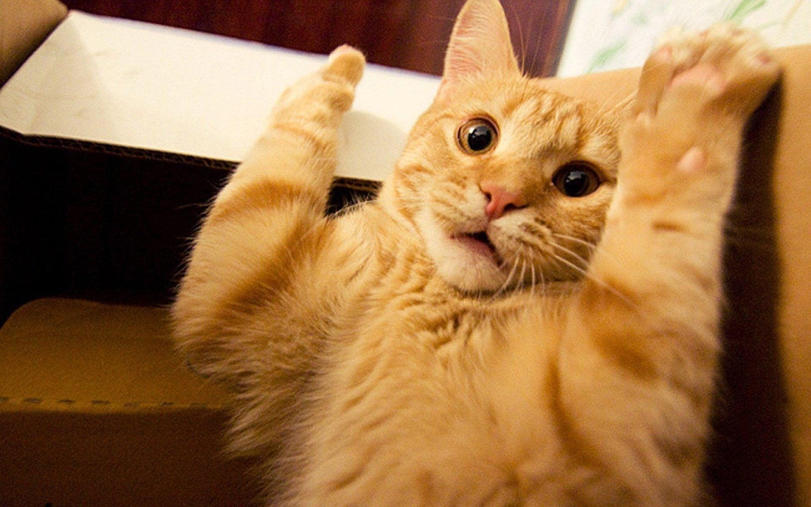

Бабуленькины котятки
Все
Абиссинская
Британская
Русская голубая
Сиамская
Сибирская
Парадокс, 6 годикоа

Мистер Блэк, 5 годиков
Пушок, 7 годиков
Паша, 6 месяцев
Малыш, 1 годик
Тая, 6 годиков
Дори и Дорн, 7 месяцев
Людовик XIV, 9 лет

Антонио, 3 годика

Пушок, 8 месяцев
Рейтинг
По убыванию
Абиссинская
7
Британская
9
Русская голубая
7
Сиамская
4
Сибирская
10